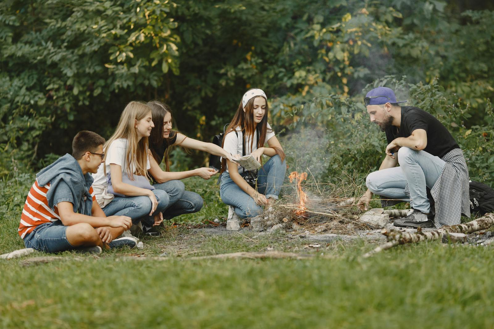
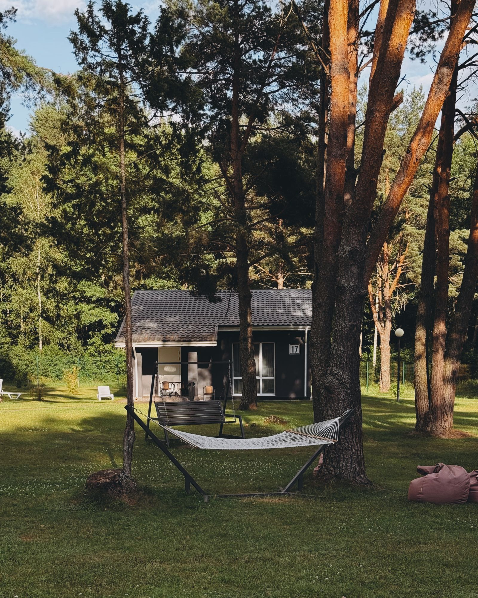
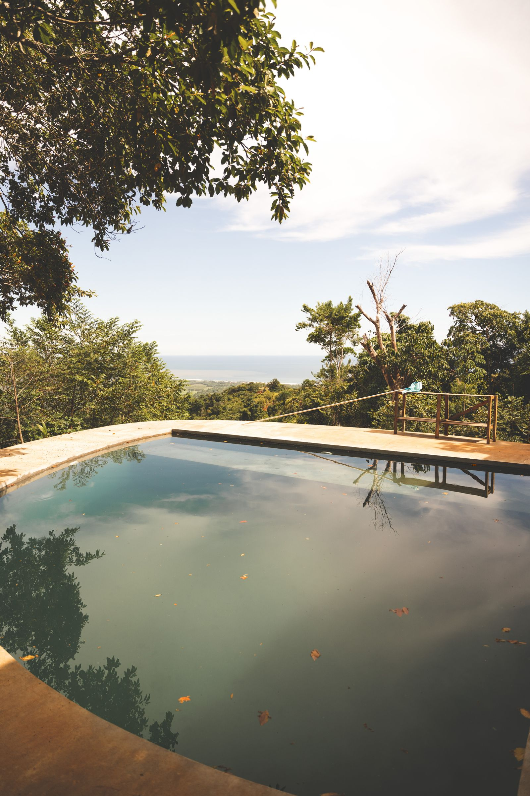
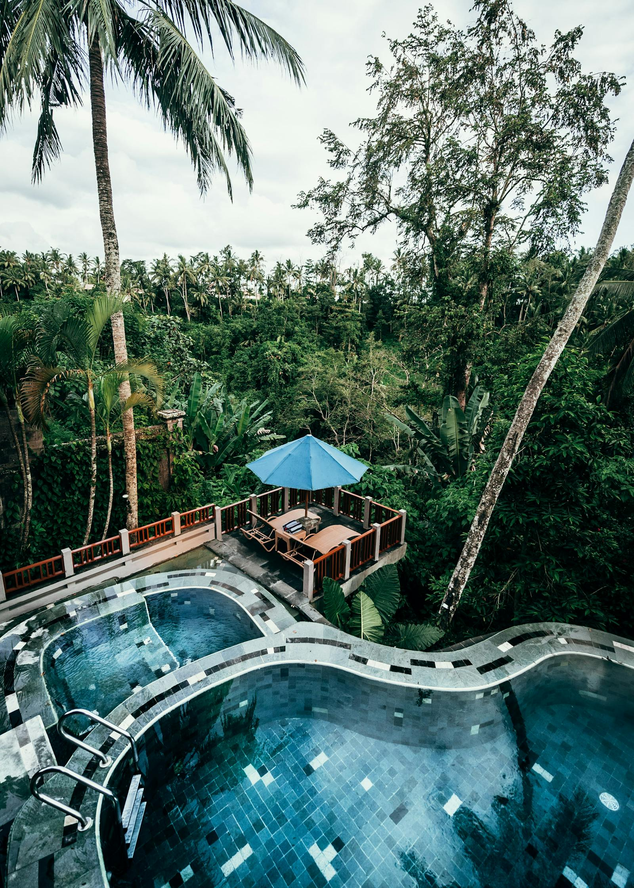

Next-generation wellness resort
Recalibrate
A premium nature resort for people who are tired of resting through a screen. Recovery tech, phone-free social moments and AI-personalized wellbeing in one stay.



Start with your energy level
Build a reset that fits your week.
Reset route
Burnout Reset
See Packages
AI-personalized recovery
Design your reset with an intelligent recovery plan.
Before arrival, guests answer a simple check-in. Recalibrate turns it into a weekend rhythm: therapy blocks, social moments, rest windows and screen-free prompts.
Low energy, high screen fatigue
Suggested: hydrotherapy first, social cinema after dinner, no-phone forest walk Sunday morning.
Reset score
12% to 86%
Or pick the perfect route
Choose a weekend template, then make it yours.
Keep the planning light. Pick the kind of reset you need, then let the resort shape the recovery, social time and quiet moments around it.
Customize every detail
Stay curated, not complicated.
Guests choose the feel of the weekend: more recovery, more social time, more quiet, or a corporate reset. The experience feels personal without asking them to plan everything.
Social entertainment
Phone-free does not have to mean bored.
Curated movie nights replace the usual scroll-before-bed ritual.
Guests move through the resort to find photobooth frames and scenic prompts.
Turn recovery into something guests can hold, remember and talk about after checkout.
Built-in resort packages
Scale the reset from one weekend to a whole team.
Two-night stay, recovery plan, hydrotherapy and social programming.
Weekday reset for guests who want a quieter resort rhythm and more space to recover.
Private stay, deeper personalization and extended therapy blocks.
Group wellbeing sessions for teams that need a screen-free reset together.
How to design your reset
A simple path from screen fatigue to real recovery.
Pick a route
Choose burnout, friends, premium or team reset.
Book the stay
Choose the timing and package that fits your recovery window.
Arrive offline
Check in, hand over the phone and follow the plan.
Leave recharged
Take home the memory and your next reason to return.
FAQ
Questions before you switch off.
Is Recalibrate a digital detox only?
No. The phone-free layer supports a broader wellness stay with recovery technology, nature and social entertainment.
What keeps guests engaged without phones?
Recovery circuits, curated movie nights, workshops and landscape photobooth hunts give the stay enough structure to feel full without screens.
Who is it for?
Young urban professionals who are digitally connected, time-poor and willing to pay for a weekend that feels restorative and culturally relevant.
Ready to stop resting through a screen?